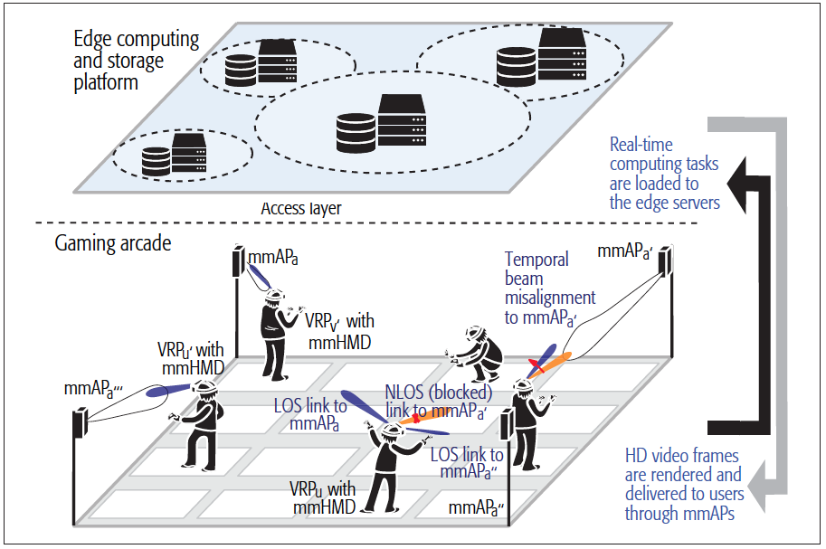
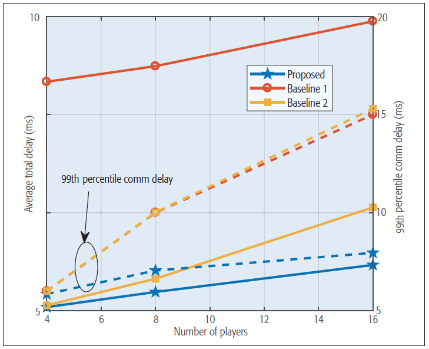
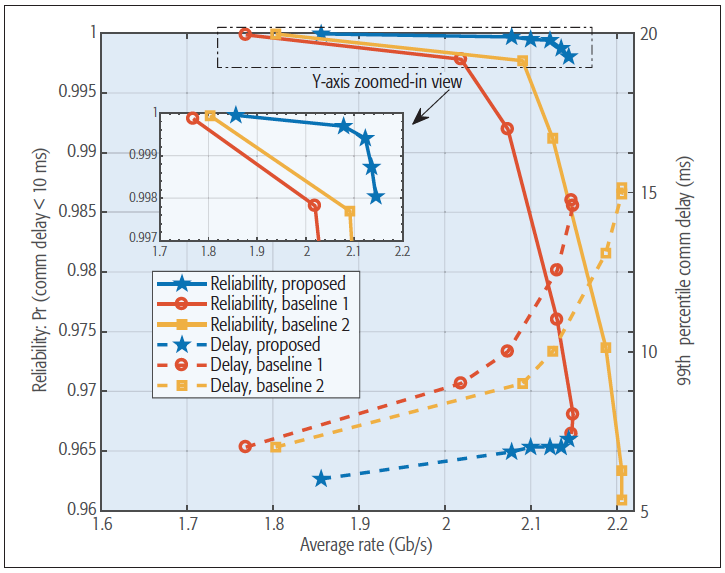
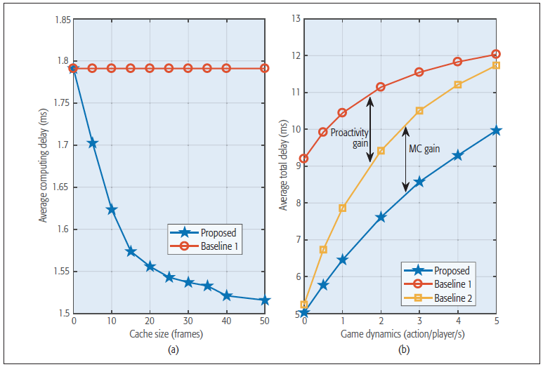

Toward Low-latency and Ultra-Reliable Virtual Reality
Content
1. Main contribution
2. Challenges
3. Enablers for URLLC in VR
4. Use case and results
5. Conclusion
1. Main contribution
- Discuss challenges in multi-users mobile VR
- Envision the enablers for Ultra-reliable and Low-latency communications (URLLC) in VR
- Reference: Elbamby, Mohammed S., et al. "Toward low-latency and ultra-reliable virtual reality." IEEE Network 32.2 (2018): 78-84.
2. Challenges
- Bandwidth
- Latency
- Reliability
- Bandwidth
1 Gb/s is needed to guarantee real-like view
This requirement exceeds the ability of 4G technology
Envision possible solution: mmWave communications
- Latency
Sensor sampling delay: small (< 1 ms)
Image processing: expected 5 ms
Computing and Communication: up-link is small, down-link is significant
Envision possible solution: Mobile edge computing (MEC)
- Reliability
Delivery of video frames on time with high success rate
Envision solution: Multi-connectivity (MC)
3. Enablers for URLLC in VR
- mmWave communication
- MEC
- mmWave communication
Cannot propagate well through obstacles such as human body
Require line-of-sight (LOS)
Track moving users to find strong reflectors to circumvent blocked LOS paths
Use signal-to-interference-plus-noise ratio (SINR) as important parameter
If SINR drop below a threshold, directional channel discovery process needs to be triggered
- MEC
No computation in VR headsets to make them light
Computations in MEC servers
MEC servers: close to users to reduce delay in spacial transmission
For real-time applications, such as interactive games, we may predict user's movement, actions, and decisions
4. Use case and results
- Simulations of a multi-players VR game
- Comparison with reactive computing (Baseline 1) and proactive computing (Baseline 2)
- Simulations of a multi-players VR game
Up to 16 players
Players move freely within individual VR pods
- Comparison with reactive computing (Baseline 1) and proactive computing (Baseline 2)
Latency performance: proposed approach significantly minimizes the delay in different conditions
- Comparison with reactive computing (Baseline 1) and proactive computing (Baseline 2)
Reliability, latency, and rate trade-offs
- Comparison with reactive computing (Baseline 1) and proactive computing (Baseline 2)
Average delay performance
5. Conclusion
The paper has highlighted the limitations of today's VR applications and presented the key enablers to achieve the vision of future ultra-reliable and low latency VR